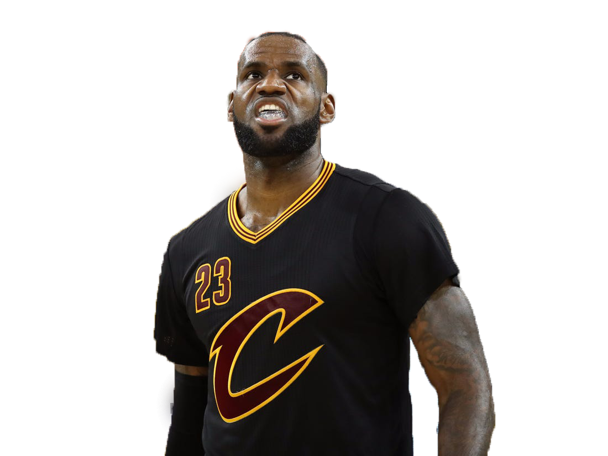
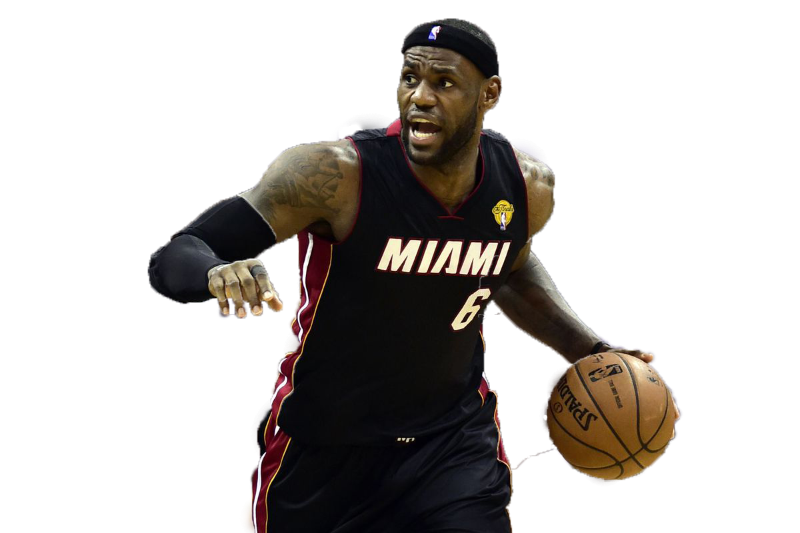
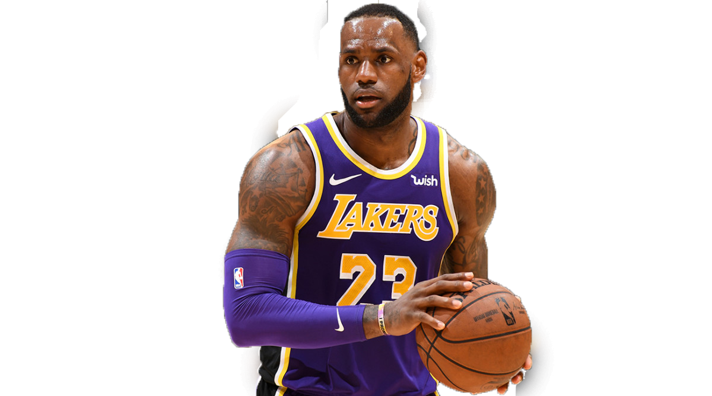
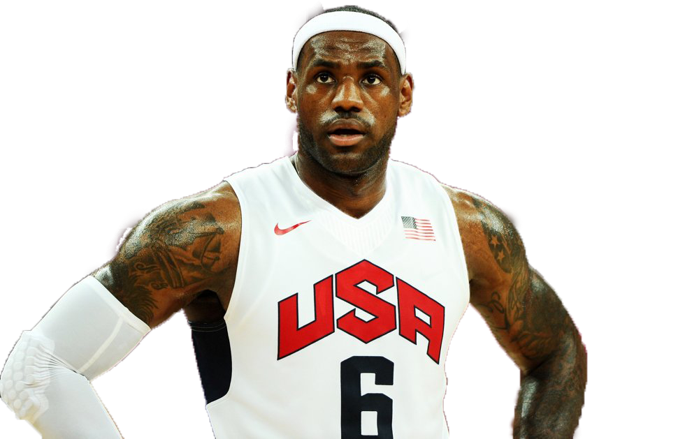
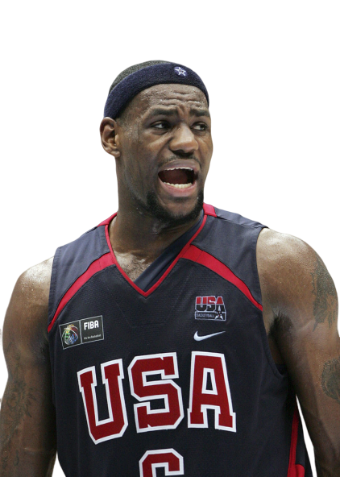

- Professional career
-

- Cleveland Cavaliers
- April 21, 2004
- Feb. 20, 2005
- May 18, 2005
- June 2, 2007
- May 6, 2009
- July 11, 2014
- June 19, 2016
- Miami Heat
- July 8, 2010
- May 11, 2012
- June 21, 2012
- May 6, 2013
- June 20, 2013
- Los Angeles Lakers
- July 1, 2018
- 2018-19 season
- 2019-20 season
James wins the Rookie of the Year Award after posting averages of 20.9 points, 5.9 assists and 5.5 rebounds per game.
James plays in his first NBA All-Star Game after being selected among the Eastern Conference starters. He finished with 13 points, 8 rebounds and 6 assists.
After finishing with averages of 31.4 points and 7.0 rebounds per games, James is selected to the All-NBA first team for the first time in his career.
James leads Cleveland to its first NBA Finals. The Spurs sweep the Cavaliers in four games.
James wins his first NBA MVP Award after averaging 30.0 points, 7.9 rebounds and 7.2 assists per game.
James announces his return to the Cleveland Cavaliers in free agency.
After leading Cleveland back from 3-1 hole, James gives the Cavaliers their first NBA title by outlasting the Golden State Warriors in seven games.

James announces he will join the Miami Heat in a televised event on ESPN called “The Decision.”
James wins his third NBA MVP Award with averages of 27.1 points, 7.9 rebounds and 6.2 assists per game.
The Heat win their second NBA title and first for James by defeating the Oklahoma City Thunder in five games.
James wins his fourth NBA MVP Award after tallying 26.8 points, 8.0 rebounds and 7.3 assists per game.
James wins his second NBA championship as the Heat beat the Spurs in a seven-game series.

James announced that he was moving on to the next chapter of his career by signing a 4-year, $153.3 million contract with the Los Angeles Lakers, a storied franchise that counted Bryant, Kareem Abdul-Jabbar and Magic Johnson among its all-time greats.
The good vibes had worn off by midseason, as the Lakers sputtered through a 17-game stretch without their injured star.
When the Lakers were officially eliminated from playoff contention in March 2019, it snapped James' personal marks of 13 consecutive postseasons and eight straight NBA Finals appearances. Capping a difficult first season in Los Angeles, the Lakers announced that their star would miss the final six games because of his lingering groin injury.
Things got off to a much better start the following season, thanks in large part to the addition of athletic big man Anthony Davis to the roster. Spearheading the Lakers' rise to the top of the standings was James, who became the first player to record a triple-double against all 30 NBA teams in November 2019.
National team career
- Olympics Games
- 2004
- 2008
- 2012
- Fiba World Cup
- 2006
- 2007

James made his Olympic debut at the 2004 Summer Games in Athens, Greece. He and his teammates won bronze medals after defeating Lithuania. Argentina took home the gold after beating Italy in the finals.
In the summer of 2008, James traveled to Beijing, China, to play with the likes of Bryant, Jason Kidd and Dwyane Wade on the U.S. Olympic basketball team. This time around the U.S. team brought home the gold after defeating Spain in the final round.
James competed at his third Olympic Games in 2012, at the Summer Olympics in London, along with Durant, Bryant, Carmelo Anthony and several other top players. The U.S. basketball team took the gold medal — James' second consecutive Olympic gold.

FIBA World Championship in Japan, James took on a greater role for Team USA, averaging 13.9 points, 4.8 rebounds, and 4.1 assists per game as co-captain. The team finished the tournament with an 8–1 record, winning another bronze medal. James's behavior was again questioned, this time by teammate Bruce Bowen, who confronted James during tryouts regarding his treatment of staff members.
At the FIBA Americas Championship 2007, he averaged 18.1 points, 3.6 rebounds, and 4.7 assists per game, including a 31-point performance against Argentina in the championship game, the most ever by an American in an Olympic qualifier.